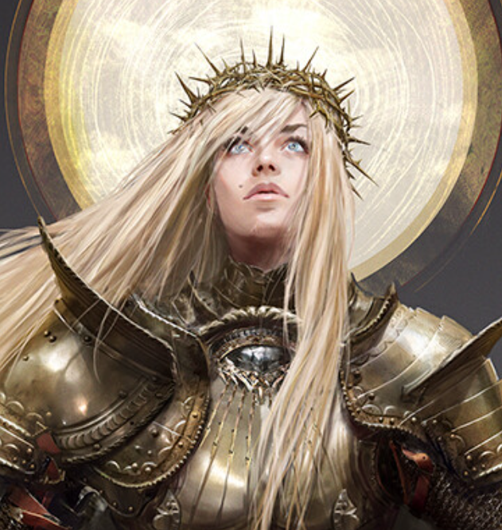

| Adria |
|

|
| Raza: |
Humana |
| Edad: |
28 |
| Altura: |
180cm |
| Facción: |
Tierra de los Amaneceres |
| Ocupacion: |
Paladina suprema de la Orden Dorada |
| Conexiones: |
? |
Adria, la Sargada
El nombre de Adria, conocida como "La Sagrada", resuena como una luz que se erige
en medio de la tinieblas imperantes en estas tierras. Como líder inquebrantable de la Orden Dorada, Adria ha sido el
faro que ha acompañado a Gideon y a La Tierra de los Amaneceres desde los días tumultuosos de la primera rebelión.
Su valentía y destreza en el campo de batalla la han convertido en una figura venerada, una excepcional caballero
cuya lealtad es tan incandescente como su espada.
Aunque Adria no se sumerge en las artes de la alquimia como algunos de sus compañeros, su luz resplandece de manera
única y sin igual, usándola para castigar a los impíos con la misma intensidad con la que ilumina el camino de aquellos
que buscan la redención en las sombras de Fraegyr. Ha demostrado ser un pilar de fortaleza y nobleza en momentos críticos, liderando con sabiduría
y sacrificándose por el bien común. Sin embargo, su radiante apariencia esconde secretos y
decisiones difíciles que han forjado su camino desde que ostenta a hacer cumplir el sueño de Gideon.
Su historia se entrelaza con la resistencia contra las tinieblas que amenazan con envolver al mundo en la perpetua noche,
y su legado perdurará en las páginas de la historia como una radiante guía en los tiempos más oscuros.
Un faro que abraza la convicción de un mundo despojado de magia y libre de aquellos que la emplean,
así como de las criaturas de la noche. Adria, con la rigidez de una inquisidora, se embarca en un sendero
implacable, persiguiendo la visión de un futuro donde solo la luz purificadora prevalezca sobre las sombras que yacen en cada rincón del reino.